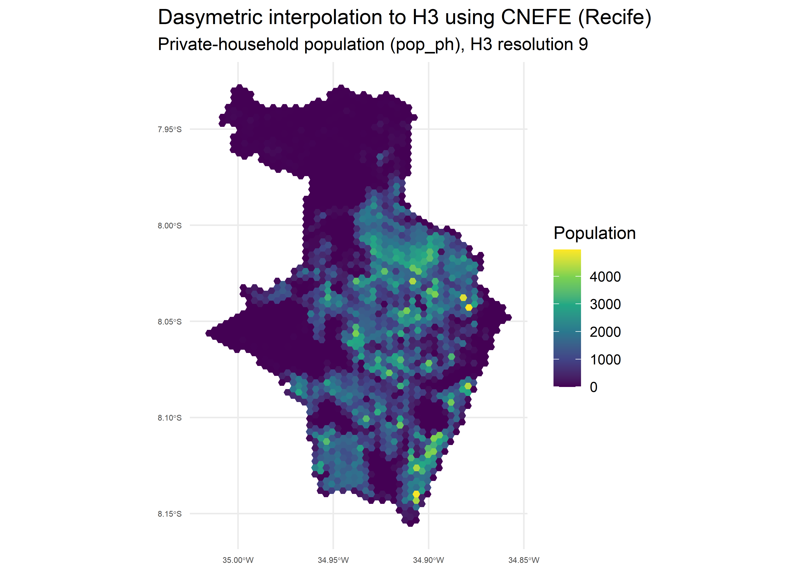

{cnefetools} provides helper functions to efficiently work with the Brazilian National Address File for Statistical Purposes (Cadastro Nacional de Endereços para Fins Estatísticos, CNEFE), an address-level dataset released by the Brazilian Institute of Geography and Statistics (Instituto Brasileiro de Geografia e Estatística, IBGE).
Installation
Install the stable version from CRAN:
install.packages("cnefetools")To install the development version from GitHub:
# install.packages("pak")
pak::pak("pedreirajr/cnefetools")
# or
# install.packages("remotes")
remotes::install_github("pedreirajr/cnefetools")Overview
| Function | Description |
|---|---|
read_cnefe() |
Downloads and reads CNEFE data for a municipality; returns an Arrow table or sf object |
cnefe_counts() |
Aggregates address counts to H3 hexagons or user-provided polygons |
compute_lumi() |
Computes land-use mix indices on H3 hexagons or user-provided polygons |
tracts_to_h3() |
Dasymetric interpolation of census tract variables to an H3 grid via CNEFE dwelling points |
tracts_to_polygon() |
Dasymetric interpolation of census tract variables to user-provided polygons via CNEFE dwelling points |
cnefe_doc() |
Opens the official CNEFE methodological note (PDF) |
cnefe_dictionary() |
Opens the official CNEFE variable dictionary (Excel) |
Reading CNEFE data
read_cnefe() downloads and reads the CNEFE CSV for a municipality, returning an Arrow table by default:
library(cnefetools)
library(dplyr)
# Read CNEFE data for Salvador as an Arrow table
tab_ssa <- read_cnefe(2927408, cache = TRUE)
tab_ssa |>
collect() |> # materialize the arrow table in R
tibble() |>
head()
#> # A tibble: 6 × 34
#> COD_UNICO_ENDERECO COD_UF COD_MUNICIPIO COD_DISTRITO COD_SUBDISTRITO COD_SETOR
#> <int> <int> <int> <int> <int64> <chr>
#> 1 222386741 29 2927408 292740805 29274080518 29274080…
#> 2 27995350 29 2927408 292740805 29274080522 29274080…
#> 3 28034841 29 2927408 292740805 29274080522 29274080…
#> 4 217544957 29 2927408 292740805 29274080518 29274080…
#> 5 217639781 29 2927408 292740805 29274080526 29274080…
#> 6 217639701 29 2927408 292740805 29274080526 29274080…
#> # ℹ 28 more variables: NUM_QUADRA <int>, NUM_FACE <int>, CEP <int>,
#> # DSC_LOCALIDADE <chr>, NOM_TIPO_SEGLOGR <chr>, NOM_TITULO_SEGLOGR <chr>,
#> # NOM_SEGLOGR <chr>, NUM_ENDERECO <int>, DSC_MODIFICADOR <chr>,
#> # NOM_COMP_ELEM1 <chr>, VAL_COMP_ELEM1 <chr>, NOM_COMP_ELEM2 <chr>,
#> # VAL_COMP_ELEM2 <chr>, NOM_COMP_ELEM3 <chr>, VAL_COMP_ELEM3 <chr>,
#> # NOM_COMP_ELEM4 <chr>, VAL_COMP_ELEM4 <chr>, NOM_COMP_ELEM5 <chr>,
#> # VAL_COMP_ELEM5 <chr>, LATITUDE <dbl>, LONGITUDE <dbl>, …Setting output = "sf" returns an sf object instead. The example below reads data for Salvador, filters religious facilities (COD_ESPECIE == 8), and plots them:
library(sf)
library(ggplot2)
# Reading CNEFE data
tab_ssa_sf <- read_cnefe(
code_muni = 2927408,
output = "sf",
cache = TRUE
)
# Filtering religious establishments
temples_ssa <- tab_ssa_sf |>
filter(COD_ESPECIE == 8)
# Ploting religious establishments points for Salvador
ggplot() +
geom_sf(data = temples_ssa, size = 0.3, alpha = 0.6) +
coord_sf() +
theme_minimal()
Warning: For large municipalities, CNEFE may contain more than 1 million address points. Plotting all coordinates at once can be slow and memory-intensive, so consider filtering or sampling before creating maps.
Caching behavior
By default, cache = TRUE stores the downloaded ZIP file in a user-level cache directory specific to this package. If you prefer to avoid persistent caching, set:
tab_ssa <- read_cnefe(code_muni = 2927408, cache = FALSE)In this case, the ZIP file is stored in a temporary location and removed after reading.
Accessing official CNEFE documentation
{cnefetools} includes local copies of the official methodological note and the variable dictionary for the 2022 CNEFE released by IBGE.
# Open the official methodological note (PDF)
cnefe_doc(year = 2022)
# Open the official variable dictionary (.xls spreadsheet)
cnefe_dictionary(year = 2022)Counting addresses with cnefe_counts()
cnefe_counts() aggregates CNEFE address points into spatial units and returns an sf object with counts by address category (addr_type1 to addr_type8). Below is an example using H3 hexagons for São Paulo at resolution 9:
library(cnefetools)
library(sf)
library(ggplot2)
# Producing CNEFE counts
hex_sp <- cnefe_counts(
code_muni = 3550308,
h3_resolution = 9,
verbose = TRUE
)Below we plot the count of private households (addr_type1) per hexagon:
# Plotting private households (addr_type1) for São Paulo
ggplot(hex_sp) +
geom_sf(aes(fill = addr_type1), color = NA) +
scale_fill_viridis_c(option = "magma") +
coord_sf() +
labs(
fill = "Count",
title = "Private households (addr_type1)",
subtitle = "São Paulo (IBGE 3550308), H3 resolution 9"
) +
theme_minimal()+
theme(
plot.title.position = "plot",
axis.text.x = element_text(size = 5),
axis.text.y = element_text(size = 5)
)
cnefe_counts() also supports polygon_type = "user" to aggregate counts to custom polygons instead of H3 hexagons. See the cnefe_counts article for details.
Land-use mix indices with compute_lumi()
compute_lumi() computes land-use mix indicators on spatial units for any municipality covered by the 2022 CNEFE dataset (Pedreira Junior et al., 2025). Available indicators include the Entropy Index (ei), the Herfindahl-Hirschman Index (hhi), the Balance Index (bal), the Index of Concentration at Extremes (ice), an adapted HHI (hhi_adp), and the Bidirectional Global-centered Balance Index (bgbi).
Below is an example for Fortaleza at H3 resolution 8:
library(cnefetools)
library(sf)
library(ggplot2)
# Computing land use mix indices
lumi_ftl <- compute_lumi(
code_muni = 2304400,
h3_resolution = 8,
verbose = TRUE
)Below we plot the Bidirectional Global-centered Balance Index (BGBI), where positive values indicate residential dominance and negative values indicate non-residential dominance:
# Plotting the BGBI index
ggplot(lumi_ftl) +
geom_sf(aes(fill = bgbi), color = NA) +
scale_fill_distiller(
type = "div",
palette = "RdBu",
direction = 1
) +
coord_sf() +
labs(
fill = "BGBI",
title = "Bidirectional Global-centered Balance Index (BGBI)",
subtitle = "Fortaleza (IBGE 2304400), H3 resolution 8"
) +
theme_minimal()+
theme(
plot.title.position = "plot",
axis.text.x = element_text(size = 5),
axis.text.y = element_text(size = 5)
)
compute_lumi() also supports polygon_type = "user" to compute indices on custom polygons. See the compute_lumi article for details.
Dasymetric interpolation with tracts_to_h3()
tracts_to_h3() performs a dasymetric interpolation, considering two stages: first, census tract totals are allocated to individual CNEFE dwelling points inside each tract; then, the allocated values are aggregated to an H3 grid at the chosen resolution. This leverages the fine-grained spatial distribution of addresses in CNEFE to produce more realistic sub-tract estimates than simple areal weighting.
library(cnefetools)
library(ggplot2)
# Performing dasymetric interpolation
rec_hex <- tracts_to_h3(
code_muni = 2611606,
h3_resolution = 9,
vars = c("pop_ph", "avg_inc_resp"),
cache = TRUE,
verbose = TRUE
)The resulting H3 grid can be mapped to visualize the spatial distribution of each variable. Below we plot the private-household population (pop_ph):
ggplot(rec_hex) +
geom_sf(aes(fill = pop_ph), color = NA) +
scale_fill_viridis_c() +
coord_sf() +
labs(
title = "Dasymetric interpolation to H3 using CNEFE (Recife)",
subtitle = "Private-household population (pop_ph), H3 resolution 9",
fill = "Population"
) +
theme_minimal() +
theme(
plot.title.position = "plot",
axis.text.x = element_text(size = 5),
axis.text.y = element_text(size = 5)
)
And the average income of the household head (avg_inc_resp):
ggplot(rec_hex) +
geom_sf(aes(fill = avg_inc_resp), color = NA) +
scale_fill_viridis_c() +
coord_sf() +
labs(
title = "Dasymetric interpolation to H3 using CNEFE (Recife)",
subtitle = "Average income of the responsible person (avg_inc_resp), H3 resolution 9",
fill = "Income"
) +
theme_minimal() +
theme(
plot.title.position = "plot",
axis.text.x = element_text(size = 5),
axis.text.y = element_text(size = 5)
)
The full list of available variables is documented in the tracts_variables_ref dataset (see ?tracts_variables_ref). For allocation rules and diagnostic details, see the tracts_to article.
Dasymetric interpolation with tracts_to_polygon()
tracts_to_polygon() follows the same two-stage workflow as tracts_to_h3(), but aggregates the allocated values to user-provided polygons (e.g. neighborhoods, administrative divisions, or custom areas) instead of an H3 grid. Let’s generate the neighborhoods of Recife with the read_neighborhood() function from the geobr package and interpolate the average income of household heads per neighborhood:
library(geobr)
# Reading neighborhoods from geobr package
rec_nei <- read_neighborhood(year = 2022, simplified = F, showProgress = F) |>
filter(name_muni == 'Recife')
# Dasymetric interpolation to neighborhoods
rec_poly <- tracts_to_polygon(
code_muni = 2611606,
polygon = rec_nei,
vars = c("pop_ph", "avg_inc_resp"),
verbose = F
)Below we plot the interpolated average income of the household head (avg_inc_resp) at the neighborhood level:
# Plotting variables at the neighborhood level
ggplot(rec_poly) +
geom_sf(aes(fill = avg_inc_resp), color = NA) +
scale_fill_viridis_c() +
coord_sf() +
labs(
title = "Dasymetric interpolation to neighborhoods using CNEFE (Recife)",
subtitle = "Average income of the responsible person (avg_inc_resp)",
fill = "Income"
) +
theme_minimal() +
theme(
plot.title.position = "plot",
axis.text.x = element_text(size = 5),
axis.text.y = element_text(size = 5)
)
See the tracts_to article for details.
DuckDB-powered spatial operations
Under the hood, {cnefetools} uses DuckDB as its default backend to perform spatial operations efficiently, with speedups of up to 20x over pure-R code depending on the number of address points and the size of the spatial units. This is made possible by three DuckDB extensions:
- spatial: performs spatial joins (e.g., point-in-polygon) in SQL, used when aggregating to user-provided polygons or performing dasymetric interpolation.
- zipfs: reads CSV files directly from cached ZIP archives, avoiding the need to extract files to disk.
- h3: assigns geographic coordinates to H3 hexagonal grid cells entirely inside DuckDB.
The R package duckspatial also bridges sf objects and DuckDB’s spatial extension, enabling seamless transfers between R and DuckDB.
All extensions are installed and loaded automatically on first use. A pure-R fallback (backend = "r") is also available, using h3jsr and sf for the same operations on cnefe_counts() and compute_lumi() functions (slower, but without the DuckDB dependency).
Citation
If you use {cnefetools} in your work, please cite the associated preprint:
Pedreira Jr., J. U.; Louro, T. V.; Assis, L. B. M.; Brito, P. L. Measuring land use mix with address-level census data (2025). engrXiv. https://engrxiv.org/preprint/view/5975